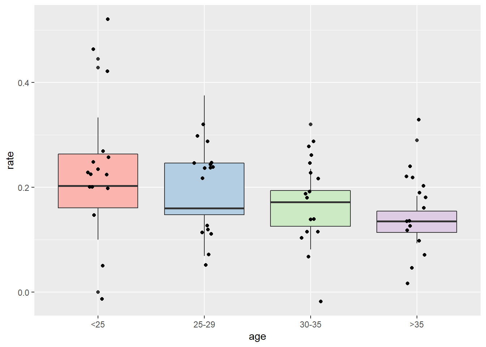
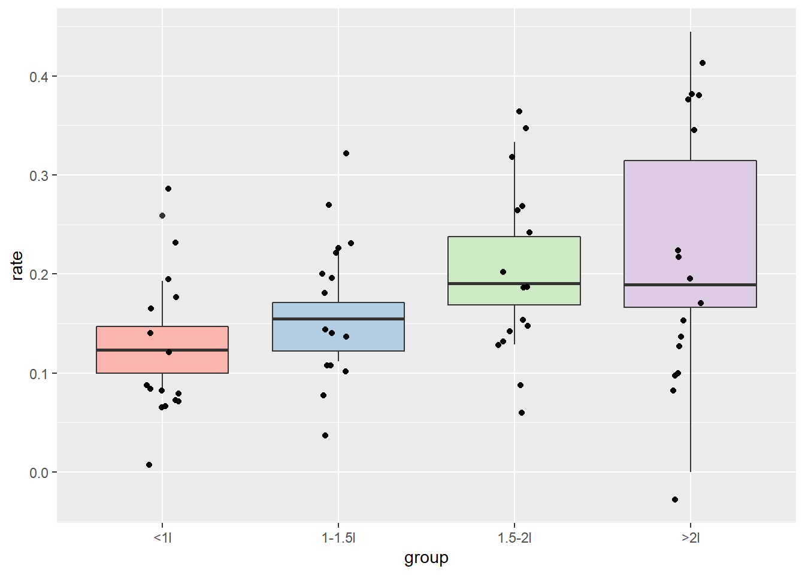
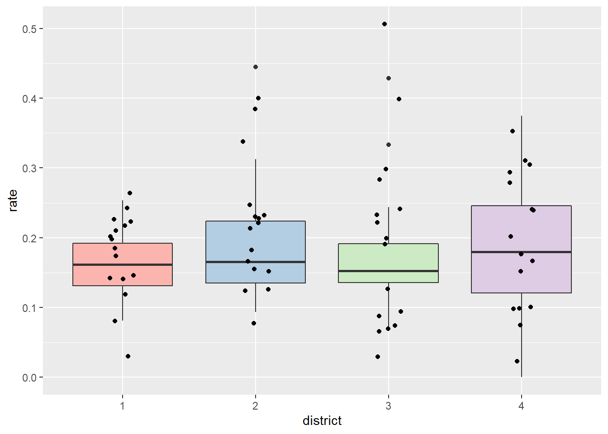

library(tidyverse)
library(ggplot2)Daily bicycle counts for major bridges in NYC
The New York City Department of Transportation collects daily data about the number of bicycles going over bridges in New York City. This data is used to measure bike utilization as a part of transportation planning. This dataset is a daily record of the number of bicycles crossing into or out of Manhattan via one of the East River bridges (that is, excluding Bronx thruways and the non-bikeable Hudson River tunnels) for a stretch of 9 months from 2016
Source https://data.cityofnewyork.us/Transportation/Bicycle-Counts-for-East-River-Bridges/gua4-p9wg
Format
Date- Identifies the month and day the Bicycle counts was taken.Day Identifies the day of the week.High Temp (°F) Identifies the high temperature of the day in Fahrenheit.Low Temp (°F) Identifies the low temperature of the day in Fahrenheit.Precipitation Identifies the amount of rain received on this day in inches.Brooklyn Bridge Identifies an East River Bridge crossing between Manhattan and Brooklyn where a bicycle count is taken.Manhattan Bridge Identifies an East River Bridge crossing between Manhattan and Brooklyn where a bicycle count is taken.Williamsburg Bridge Identifies an East River Bridge crossing between Manhattan and Brooklyn where a bicycle count is taken.Queensboro Bridge Identifies an East River Bridge crossing between Manhattan and Queens where a bicycle count is taken.Total Identifies the total counts of bicycle crossing over East River Bridges in a day.bikes_df = read_csv("datasets/bikes/bikes_combined.csv")## Parsed with column specification:
## cols(
## Date = col_character(),
## Day = col_character(),
## `High Temp (<c1>F)` = col_double(),
## `Low Temp (<c1>F)` = col_double(),
## Precipitation = col_character(),
## `Brooklyn Bridge` = col_number(),
## `Manhattan Bridge` = col_number(),
## `Williamsburg Bridge` = col_number(),
## `Queensboro Bridge` = col_number(),
## Total = col_number()
## )# lets clean col names:
bikes_df = bikes_df %>% rename_all(janitor::make_clean_names) %>%
mutate_at("date", lubridate::as_date,format = "%m/%d/%Y", tz = "")
# let's add month, year, day
bikes_df = bikes_df %>% mutate(
month = format(date, format = "%m", usetz = FALSE),
year = format(date, format = "%Y", usetz = FALSE)
) %>% mutate_at(vars(month, year, day) , as.factor) %>%
mutate(weekday = fct_relevel(day, "Monday", "Tuesday", "Wednesday", "Thursday", "Friday", "Saturday", "Sunday")) %>%
mutate(precipitation = as.numeric( str_replace(precipitation,"\\(S\\)", "" )))## Warning in mask$eval_all_mutate(quo): NAs introduced by coercionbikes_df = bikes_df %>% rename("high_temp_f" = "high_temp_u_fffd_f","low_temp_f" = "low_temp_u_fffd_f" )str(bikes_df)## Classes 'spec_tbl_df', 'tbl_df', 'tbl' and 'data.frame': 214 obs. of 13 variables:
## $ date : Date, format: "2016-04-01" "2016-04-02" ...
## $ day : Factor w/ 7 levels "Friday","Monday",..: 1 3 4 2 6 7 5 1 3 4 ...
## $ high_temp_f : num 78.1 55 39.9 44.1 42.1 45 57 46.9 43 48.9 ...
## $ low_temp_f : num 66 48.9 34 33.1 26.1 30 53.1 44.1 37.9 30.9 ...
## $ precipitation : num 0.01 0.15 0.09 0.47 0 0 0.09 0.01 0.09 0 ...
## $ brooklyn_bridge : num 1704 827 526 521 1416 ...
## $ manhattan_bridge : num 3126 1646 1232 1067 2617 ...
## $ williamsburg_bridge: num 4115 2565 1695 1440 3081 ...
## $ queensboro_bridge : num 2552 1884 1306 1307 2357 ...
## $ total : num 11497 6922 4759 4335 9471 ...
## $ month : Factor w/ 7 levels "04","05","06",..: 1 1 1 1 1 1 1 1 1 1 ...
## $ year : Factor w/ 1 level "2016": 1 1 1 1 1 1 1 1 1 1 ...
## $ weekday : Factor w/ 7 levels "Monday","Tuesday",..: 5 6 7 1 2 3 4 5 6 7 ...
## - attr(*, "spec")=
## .. cols(
## .. Date = col_character(),
## .. Day = col_character(),
## .. `High Temp (<U+633C><U+3E31>F)` = col_double(),
## .. `Low Temp (<U+633C><U+3E31>F)` = col_double(),
## .. Precipitation = col_character(),
## .. `Brooklyn Bridge` = col_number(),
## .. `Manhattan Bridge` = col_number(),
## .. `Williamsburg Bridge` = col_number(),
## .. `Queensboro Bridge` = col_number(),
## .. Total = col_number()
## .. )hist_by_day = function(colname, title) {
bikes_df %>%
ggplot(aes(x=weekday, y= {{colname}}, color = weekday)) +
geom_boxplot() + theme(legend.position = "",
axis.text.x = element_text(angle=20, hjust=1, size = 8),
text = element_text(size=8) ,
plot.title = element_text(size = 15)) +
labs(title = title)
}
p1 = hist_by_day(total, "Total")
p2 = hist_by_day(brooklyn_bridge, "Brooklyn Bridge")
p3 = hist_by_day(manhattan_bridge, "Manhattan Bridge")
p4 = hist_by_day(williamsburg_bridge, "Williamsburg Bridge")
gridExtra::grid.arrange(p1, p2 , p3 ,p4)hist_by_month = function(colname, title) {
bikes_df %>%
ggplot(aes(x=month, y= {{colname}},color = month)) +
geom_boxplot() + theme(legend.position = "",
axis.text.x = element_text( size = 8),
text = element_text(size=8) ,
plot.title = element_text(size = 15)) +
labs(title = title)
}
p1 = hist_by_month(total, "Total")
p2 = hist_by_month(brooklyn_bridge, "Brooklyn Bridge")
p3 = hist_by_month(manhattan_bridge, "Manhattan Bridge")
p4 = hist_by_month(williamsburg_bridge, "Williamsburg Bridge")
gridExtra::grid.arrange(p1, p2 , p3 ,p4)bikes_df %>%
ggplot(aes(x= high_temp_f, y= total)) +
geom_point() +
geom_smooth(method = 'glm', method.args = list(family = "poisson"))bikes_df %>%
ggplot(aes(x= high_temp_f, y= log(total))) +
geom_point() bikes_df %>%
ggplot(aes(x= high_temp_f, y= total, color = month)) +
geom_point() +
geom_smooth(method = 'glm', method.args = list(family = "poisson"))bikes_df %>%
ggplot(aes(x= low_temp_f , y= total)) +
geom_point() +
geom_smooth(method = 'glm', method.args = list(family = "poisson"))bikes_df %>%
ggplot(aes(x= low_temp_f , y= total, color = month)) +
geom_point() +
geom_smooth(method = 'glm', method.args = list(family = "poisson"))bikes_df %>%
ggplot(aes(x= precipitation , y= total)) +
geom_point() +
geom_smooth(method = 'glm', method.args = list(family = "poisson"))## Warning: Removed 18 rows containing non-finite values (stat_smooth).## Warning: Removed 18 rows containing missing values (geom_point).fit_1 = glm(total ~ high_temp_f , data = bikes_df, family = 'poisson')
summary(fit_1)##
## Call:
## glm(formula = total ~ high_temp_f, family = "poisson", data = bikes_df)
##
## Deviance Residuals:
## Min 1Q Median 3Q Max
## -88.761 -27.451 3.115 30.225 59.700
##
## Coefficients:
## Estimate Std. Error z value Pr(>|z|)
## (Intercept) 8.687e+00 3.344e-03 2598 <2e-16 ***
## high_temp_f 1.500e-02 4.286e-05 350 <2e-16 ***
## ---
## Signif. codes: 0 '***' 0.001 '**' 0.01 '*' 0.05 '.' 0.1 ' ' 1
##
## (Dispersion parameter for poisson family taken to be 1)
##
## Null deviance: 415443 on 213 degrees of freedom
## Residual deviance: 287117 on 212 degrees of freedom
## AIC: 289604
##
## Number of Fisher Scoring iterations: 4fit_2 = glm(total ~ high_temp_f+ weekday , data = bikes_df, family = 'poisson')
summary(fit_2)##
## Call:
## glm(formula = total ~ high_temp_f + weekday, family = "poisson",
## data = bikes_df)
##
## Deviance Residuals:
## Min 1Q Median 3Q Max
## -81.668 -19.394 5.679 20.677 51.449
##
## Coefficients:
## Estimate Std. Error z value Pr(>|z|)
## (Intercept) 8.757e+00 3.565e-03 2456.45 <2e-16 ***
## high_temp_f 1.466e-02 4.317e-05 339.52 <2e-16 ***
## weekdayTuesday 8.166e-02 1.808e-03 45.17 <2e-16 ***
## weekdayWednesday 1.342e-01 1.775e-03 75.62 <2e-16 ***
## weekdayThursday 5.655e-02 1.808e-03 31.28 <2e-16 ***
## weekdayFriday -7.628e-02 1.859e-03 -41.03 <2e-16 ***
## weekdaySaturday -2.522e-01 1.953e-03 -129.15 <2e-16 ***
## weekdaySunday -3.316e-01 2.004e-03 -165.47 <2e-16 ***
## ---
## Signif. codes: 0 '***' 0.001 '**' 0.01 '*' 0.05 '.' 0.1 ' ' 1
##
## (Dispersion parameter for poisson family taken to be 1)
##
## Null deviance: 415443 on 213 degrees of freedom
## Residual deviance: 189309 on 206 degrees of freedom
## AIC: 191808
##
## Number of Fisher Scoring iterations: 4fit_3 = glm(total ~ high_temp_f + weekday + month, data = bikes_df, family = 'poisson')
summary(fit_3)##
## Call:
## glm(formula = total ~ high_temp_f + weekday + month, family = "poisson",
## data = bikes_df)
##
## Deviance Residuals:
## Min 1Q Median 3Q Max
## -81.825 -17.270 3.656 19.656 48.867
##
## Coefficients:
## Estimate Std. Error z value Pr(>|z|)
## (Intercept) 8.591e+00 4.412e-03 1947.035 <2e-16 ***
## high_temp_f 1.695e-02 6.329e-05 267.802 <2e-16 ***
## weekdayTuesday 8.442e-02 1.809e-03 46.656 <2e-16 ***
## weekdayWednesday 1.306e-01 1.777e-03 73.486 <2e-16 ***
## weekdayThursday 5.145e-02 1.810e-03 28.425 <2e-16 ***
## weekdayFriday -7.425e-02 1.862e-03 -39.867 <2e-16 ***
## weekdaySaturday -2.526e-01 1.954e-03 -129.281 <2e-16 ***
## weekdaySunday -3.298e-01 2.005e-03 -164.483 <2e-16 ***
## month05 -1.852e-02 2.141e-03 -8.648 <2e-16 ***
## month06 7.331e-02 2.255e-03 32.514 <2e-16 ***
## month07 -1.048e-01 2.490e-03 -42.075 <2e-16 ***
## month08 -7.970e-02 2.460e-03 -32.395 <2e-16 ***
## month09 1.946e-02 2.252e-03 8.642 <2e-16 ***
## month10 6.631e-02 2.076e-03 31.939 <2e-16 ***
## ---
## Signif. codes: 0 '***' 0.001 '**' 0.01 '*' 0.05 '.' 0.1 ' ' 1
##
## (Dispersion parameter for poisson family taken to be 1)
##
## Null deviance: 415443 on 213 degrees of freedom
## Residual deviance: 175386 on 200 degrees of freedom
## AIC: 177897
##
## Number of Fisher Scoring iterations: 4fit_4 = glm(total ~ high_temp_f + weekday + month + precipitation , data = bikes_df, family = 'poisson')
summary(fit_4)##
## Call:
## glm(formula = total ~ high_temp_f + weekday + month + precipitation,
## family = "poisson", data = bikes_df)
##
## Deviance Residuals:
## Min 1Q Median 3Q Max
## -59.727 -14.950 1.858 15.655 93.476
##
## Coefficients:
## Estimate Std. Error z value Pr(>|z|)
## (Intercept) 8.744e+00 4.657e-03 1877.793 < 2e-16 ***
## high_temp_f 1.531e-02 6.702e-05 228.451 < 2e-16 ***
## weekdayTuesday 5.605e-02 1.922e-03 29.167 < 2e-16 ***
## weekdayWednesday 7.661e-02 1.850e-03 41.408 < 2e-16 ***
## weekdayThursday 3.122e-02 1.890e-03 16.518 < 2e-16 ***
## weekdayFriday -7.997e-02 1.907e-03 -41.926 < 2e-16 ***
## weekdaySaturday -2.888e-01 2.058e-03 -140.313 < 2e-16 ***
## weekdaySunday -3.597e-01 2.102e-03 -171.107 < 2e-16 ***
## month05 1.746e-02 2.281e-03 7.655 1.93e-14 ***
## month06 1.213e-01 2.351e-03 51.596 < 2e-16 ***
## month07 1.753e-02 2.670e-03 6.565 5.20e-11 ***
## month08 -3.113e-02 2.587e-03 -12.036 < 2e-16 ***
## month09 8.289e-02 2.351e-03 35.256 < 2e-16 ***
## month10 9.384e-02 2.152e-03 43.613 < 2e-16 ***
## precipitation -5.498e-01 2.552e-03 -215.444 < 2e-16 ***
## ---
## Signif. codes: 0 '***' 0.001 '**' 0.01 '*' 0.05 '.' 0.1 ' ' 1
##
## (Dispersion parameter for poisson family taken to be 1)
##
## Null deviance: 402607 on 195 degrees of freedom
## Residual deviance: 111818 on 181 degrees of freedom
## (18 observations deleted due to missingness)
## AIC: 114122
##
## Number of Fisher Scoring iterations: 4fit_5 = glm(total ~ high_temp_f + weekday + month + precipitation + low_temp_f , data = bikes_df, family = 'poisson')
summary(fit_5)##
## Call:
## glm(formula = total ~ high_temp_f + weekday + month + precipitation +
## low_temp_f, family = "poisson", data = bikes_df)
##
## Deviance Residuals:
## Min 1Q Median 3Q Max
## -61.014 -13.582 0.923 14.278 89.231
##
## Coefficients:
## Estimate Std. Error z value Pr(>|z|)
## (Intercept) 8.7831512 0.0046851 1874.71 <2e-16 ***
## high_temp_f 0.0232052 0.0001151 201.62 <2e-16 ***
## weekdayTuesday 0.0843729 0.0019502 43.26 <2e-16 ***
## weekdayWednesday 0.0954183 0.0018621 51.24 <2e-16 ***
## weekdayThursday 0.0538631 0.0019078 28.23 <2e-16 ***
## weekdayFriday -0.0462440 0.0019472 -23.75 <2e-16 ***
## weekdaySaturday -0.2716924 0.0020675 -131.41 <2e-16 ***
## weekdaySunday -0.3455448 0.0021087 -163.86 <2e-16 ***
## month05 0.0602829 0.0023398 25.76 <2e-16 ***
## month06 0.1907576 0.0024971 76.39 <2e-16 ***
## month07 0.1250129 0.0029728 42.05 <2e-16 ***
## month08 0.0840970 0.0029370 28.63 <2e-16 ***
## month09 0.1649525 0.0025527 64.62 <2e-16 ***
## month10 0.1405085 0.0022223 63.23 <2e-16 ***
## precipitation -0.5158534 0.0025730 -200.48 <2e-16 ***
## low_temp_f -0.0116753 0.0001384 -84.37 <2e-16 ***
## ---
## Signif. codes: 0 '***' 0.001 '**' 0.01 '*' 0.05 '.' 0.1 ' ' 1
##
## (Dispersion parameter for poisson family taken to be 1)
##
## Null deviance: 402607 on 195 degrees of freedom
## Residual deviance: 104709 on 180 degrees of freedom
## (18 observations deleted due to missingness)
## AIC: 107014
##
## Number of Fisher Scoring iterations: 4fit_6 = glm(total ~ high_temp_f + weekday * month, data = bikes_df, family = 'poisson')
summary(fit_6)##
## Call:
## glm(formula = total ~ high_temp_f + weekday * month, family = "poisson",
## data = bikes_df)
##
## Deviance Residuals:
## Min 1Q Median 3Q Max
## -77.857 -16.401 2.808 16.202 66.311
##
## Coefficients:
## Estimate Std. Error z value Pr(>|z|)
## (Intercept) 8.533e+00 5.940e-03 1436.564 < 2e-16 ***
## high_temp_f 1.707e-02 6.572e-05 259.729 < 2e-16 ***
## weekdayTuesday -2.298e-02 5.918e-03 -3.883 0.000103 ***
## weekdayWednesday 2.764e-01 5.494e-03 50.311 < 2e-16 ***
## weekdayThursday 1.100e-01 5.615e-03 19.586 < 2e-16 ***
## weekdayFriday -4.976e-02 5.445e-03 -9.139 < 2e-16 ***
## weekdaySaturday -1.929e-01 5.780e-03 -33.378 < 2e-16 ***
## weekdaySunday -1.353e-01 6.071e-03 -22.285 < 2e-16 ***
## month05 5.641e-02 5.236e-03 10.774 < 2e-16 ***
## month06 2.008e-01 5.226e-03 38.418 < 2e-16 ***
## month07 -1.792e-01 5.608e-03 -31.954 < 2e-16 ***
## month08 7.646e-03 5.190e-03 1.473 0.140716
## month09 -4.535e-02 5.540e-03 -8.185 2.73e-16 ***
## month10 1.962e-01 5.161e-03 38.007 < 2e-16 ***
## weekdayTuesday:month05 -1.557e-02 7.614e-03 -2.045 0.040844 *
## weekdayWednesday:month05 -1.420e-01 7.304e-03 -19.442 < 2e-16 ***
## weekdayThursday:month05 5.062e-03 7.371e-03 0.687 0.492292
## weekdayFriday:month05 -9.275e-02 7.528e-03 -12.320 < 2e-16 ***
## weekdaySaturday:month05 -1.084e-01 7.925e-03 -13.683 < 2e-16 ***
## weekdaySunday:month05 -2.155e-01 8.045e-03 -26.784 < 2e-16 ***
## weekdayTuesday:month06 -2.213e-02 7.473e-03 -2.961 0.003068 **
## weekdayWednesday:month06 -2.610e-01 6.965e-03 -37.476 < 2e-16 ***
## weekdayThursday:month06 -1.129e-01 7.097e-03 -15.914 < 2e-16 ***
## weekdayFriday:month06 2.316e-03 7.172e-03 0.323 0.746773
## weekdaySaturday:month06 -1.687e-01 7.579e-03 -22.256 < 2e-16 ***
## weekdaySunday:month06 -3.937e-01 8.008e-03 -49.161 < 2e-16 ***
## weekdayTuesday:month07 2.970e-01 7.658e-03 38.777 < 2e-16 ***
## weekdayWednesday:month07 4.306e-02 7.291e-03 5.906 3.50e-09 ***
## weekdayThursday:month07 6.777e-02 7.453e-03 9.092 < 2e-16 ***
## weekdayFriday:month07 6.472e-02 7.329e-03 8.831 < 2e-16 ***
## weekdaySaturday:month07 2.994e-02 7.738e-03 3.870 0.000109 ***
## weekdaySunday:month07 -4.672e-02 7.977e-03 -5.857 4.72e-09 ***
## weekdayTuesday:month08 1.389e-01 7.250e-03 19.161 < 2e-16 ***
## weekdayWednesday:month08 -2.561e-01 6.955e-03 -36.817 < 2e-16 ***
## weekdayThursday:month08 -1.216e-01 7.229e-03 -16.821 < 2e-16 ***
## weekdayFriday:month08 -9.280e-02 7.169e-03 -12.944 < 2e-16 ***
## weekdaySaturday:month08 -7.105e-02 7.545e-03 -9.417 < 2e-16 ***
## weekdaySunday:month08 -2.660e-01 7.899e-03 -33.679 < 2e-16 ***
## weekdayTuesday:month09 2.218e-01 7.757e-03 28.600 < 2e-16 ***
## weekdayWednesday:month09 -1.135e-01 7.454e-03 -15.222 < 2e-16 ***
## weekdayThursday:month09 -8.666e-03 7.445e-03 -1.164 0.244408
## weekdayFriday:month09 8.280e-02 7.356e-03 11.257 < 2e-16 ***
## weekdaySaturday:month09 2.464e-01 7.772e-03 31.698 < 2e-16 ***
## weekdaySunday:month09 7.031e-02 8.093e-03 8.687 < 2e-16 ***
## weekdayTuesday:month10 1.263e-01 7.558e-03 16.715 < 2e-16 ***
## weekdayWednesday:month10 -1.721e-01 7.227e-03 -23.815 < 2e-16 ***
## weekdayThursday:month10 -1.740e-01 7.470e-03 -23.295 < 2e-16 ***
## weekdayFriday:month10 -7.679e-02 7.457e-03 -10.298 < 2e-16 ***
## weekdaySaturday:month10 -3.158e-01 7.899e-03 -39.984 < 2e-16 ***
## weekdaySunday:month10 -4.276e-01 8.110e-03 -52.731 < 2e-16 ***
## ---
## Signif. codes: 0 '***' 0.001 '**' 0.01 '*' 0.05 '.' 0.1 ' ' 1
##
## (Dispersion parameter for poisson family taken to be 1)
##
## Null deviance: 415443 on 213 degrees of freedom
## Residual deviance: 152478 on 164 degrees of freedom
## AIC: 155061
##
## Number of Fisher Scoring iterations: 4fit_7 = glm(total ~ high_temp_f + low_temp_f + weekday , data = bikes_df, family = 'poisson')
summary(fit_7)##
## Call:
## glm(formula = total ~ high_temp_f + low_temp_f + weekday, family = "poisson",
## data = bikes_df)
##
## Deviance Residuals:
## Min 1Q Median 3Q Max
## -84.278 -15.326 4.451 19.231 56.031
##
## Coefficients:
## Estimate Std. Error z value Pr(>|z|)
## (Intercept) 8.6917730 0.0036049 2411.07 <2e-16 ***
## high_temp_f 0.0277679 0.0001069 259.70 <2e-16 ***
## low_temp_f -0.0152115 0.0001131 -134.55 <2e-16 ***
## weekdayTuesday 0.1225263 0.0018341 66.81 <2e-16 ***
## weekdayWednesday 0.1485813 0.0017784 83.55 <2e-16 ***
## weekdayThursday 0.0784514 0.0018154 43.21 <2e-16 ***
## weekdayFriday -0.0344685 0.0018848 -18.29 <2e-16 ***
## weekdaySaturday -0.2304912 0.0019592 -117.65 <2e-16 ***
## weekdaySunday -0.3102820 0.0020099 -154.38 <2e-16 ***
## ---
## Signif. codes: 0 '***' 0.001 '**' 0.01 '*' 0.05 '.' 0.1 ' ' 1
##
## (Dispersion parameter for poisson family taken to be 1)
##
## Null deviance: 415443 on 213 degrees of freedom
## Residual deviance: 171363 on 205 degrees of freedom
## AIC: 173864
##
## Number of Fisher Scoring iterations: 4fit_8 = glm(total ~ high_temp_f + weekday + low_temp_f + precipitation , data = bikes_df, family = 'poisson')
summary(fit_8)##
## Call:
## glm(formula = total ~ high_temp_f + weekday + low_temp_f + precipitation,
## family = "poisson", data = bikes_df)
##
## Deviance Residuals:
## Min 1Q Median 3Q Max
## -66.280 -15.351 2.107 16.216 83.654
##
## Coefficients:
## Estimate Std. Error z value Pr(>|z|)
## (Intercept) 8.7795631 0.0038037 2308.16 <2e-16 ***
## high_temp_f 0.0229569 0.0001130 203.10 <2e-16 ***
## weekdayTuesday 0.0750330 0.0019492 38.49 <2e-16 ***
## weekdayWednesday 0.0987894 0.0018591 53.14 <2e-16 ***
## weekdayThursday 0.0524679 0.0019027 27.58 <2e-16 ***
## weekdayFriday -0.0495569 0.0019414 -25.53 <2e-16 ***
## weekdaySaturday -0.2719220 0.0020657 -131.63 <2e-16 ***
## weekdaySunday -0.3427375 0.0021067 -162.69 <2e-16 ***
## low_temp_f -0.0095097 0.0001192 -79.75 <2e-16 ***
## precipitation -0.5109156 0.0025220 -202.59 <2e-16 ***
## ---
## Signif. codes: 0 '***' 0.001 '**' 0.01 '*' 0.05 '.' 0.1 ' ' 1
##
## (Dispersion parameter for poisson family taken to be 1)
##
## Null deviance: 402607 on 195 degrees of freedom
## Residual deviance: 115700 on 186 degrees of freedom
## (18 observations deleted due to missingness)
## AIC: 117993
##
## Number of Fisher Scoring iterations: 4Description
The data given in data frame Insurance consist of the numbers of policyholders of an insurance company who were exposed to risk, and the numbers of car insurance claims made by those policyholders in the third quarter of 1973.
Format
This data frame contains the following columns:
District factor: district of residence of policyholder (1 to 4): 4 is major cities.Group an ordered factor: group of car with levels <1 litre, 1–1.5 litre, 1.5–2 litre, >2 litre.Age an ordered factor: the age of the insured in 4 groups labelled <25, 25–29, 30–35, >35.Holders numbers of policyholders.Claims numbers of claimsSource
L. A. Baxter, S. M. Coutts and G. A. F. Ross (1980) Applications of linear models in motor insurance. Proceedings of the 21st International Congress of Actuaries, Zurich pp. 11–29.
M. Aitkin, D. Anderson, B. Francis and J. Hinde (1989) Statistical Modelling in GLIM. Oxford University Press.
library(MASS)
data(Insurance )head(Insurance)Insurance = Insurance %>% rename_all(janitor::make_clean_names)str(Insurance)## 'data.frame': 64 obs. of 5 variables:
## $ district: Factor w/ 4 levels "1","2","3","4": 1 1 1 1 1 1 1 1 1 1 ...
## $ group : Ord.factor w/ 4 levels "<1l"<"1-1.5l"<..: 1 1 1 1 2 2 2 2 3 3 ...
## $ age : Ord.factor w/ 4 levels "<25"<"25-29"<..: 1 2 3 4 1 2 3 4 1 2 ...
## $ holders : int 197 264 246 1680 284 536 696 3582 133 286 ...
## $ claims : int 38 35 20 156 63 84 89 400 19 52 ...Insurance = Insurance %>% mutate(rate = claims/holders ) Insurance %>% ggplot(aes(x=age, y = rate, fill = age )) +
geom_boxplot() +
scale_fill_brewer(palette = "Pastel1") +
geom_jitter( position=position_jitter(w=0.1,h=0.1) ) +
theme(legend.position = "")
Insurance %>% ggplot(aes(x=group, y = rate, fill = group )) +
geom_boxplot() +
scale_fill_brewer(palette = "Pastel1") +
geom_jitter( position=position_jitter(w=0.1,h=0.1) ) +
theme(legend.position = "")
Insurance %>% ggplot(aes(x=district, y = rate, fill = district)) +
geom_boxplot() +
scale_fill_brewer(palette = "Pastel1") +
geom_jitter( position=position_jitter(w=0.1,h=0.1) ) +
theme(legend.position = "")
Insurance %>% ggplot(aes(x=age, y = rate , fill = group )) +
geom_boxplot() +
scale_fill_brewer(palette = "Pastel1")fit_offset <- glm(claims ~ group + age , offset = log(holders ),
data = Insurance, family = 'poisson')
summary(fit_offset)##
## Call:
## glm(formula = claims ~ group + age, family = "poisson", data = Insurance,
## offset = log(holders))
##
## Deviance Residuals:
## Min 1Q Median 3Q Max
## -2.61407 -0.59513 -0.07229 0.78529 2.71480
##
## Coefficients:
## Estimate Std. Error z value Pr(>|z|)
## (Intercept) -1.776382 0.026812 -66.253 < 2e-16 ***
## group.L 0.433991 0.049428 8.780 < 2e-16 ***
## group.Q 0.006210 0.041979 0.148 0.882
## group.C -0.028389 0.033060 -0.859 0.391
## age.L -0.387021 0.049262 -7.856 3.95e-15 ***
## age.Q -0.001336 0.048914 -0.027 0.978
## age.C -0.017155 0.048476 -0.354 0.723
## ---
## Signif. codes: 0 '***' 0.001 '**' 0.01 '*' 0.05 '.' 0.1 ' ' 1
##
## (Dispersion parameter for poisson family taken to be 1)
##
## Null deviance: 236.259 on 63 degrees of freedom
## Residual deviance: 65.291 on 57 degrees of freedom
## AIC: 396.61
##
## Number of Fisher Scoring iterations: 4fit_offset2 <- glm(claims ~ group * age , offset = log(holders ),
data = Insurance, family = 'poisson')
summary(fit_offset2)##
## Call:
## glm(formula = claims ~ group * age, family = "poisson", data = Insurance,
## offset = log(holders))
##
## Deviance Residuals:
## Min 1Q Median 3Q Max
## -2.31270 -0.53796 -0.02782 0.71511 2.62522
##
## Coefficients:
## Estimate Std. Error z value Pr(>|z|)
## (Intercept) -1.79080 0.03133 -57.162 < 2e-16 ***
## group.L 0.39446 0.07466 5.284 1.27e-07 ***
## group.Q 0.01040 0.06266 0.166 0.868
## group.C -0.02937 0.04773 -0.615 0.538
## age.L -0.36495 0.06694 -5.452 4.99e-08 ***
## age.Q -0.01679 0.06266 -0.268 0.789
## age.C 0.01276 0.05805 0.220 0.826
## group.L:age.L 0.20296 0.16003 1.268 0.205
## group.Q:age.L -0.11281 0.13389 -0.843 0.399
## group.C:age.L -0.07757 0.10120 -0.767 0.443
## group.L:age.Q -0.18582 0.14931 -1.244 0.213
## group.Q:age.Q 0.12770 0.12531 1.019 0.308
## group.C:age.Q 0.15693 0.09547 1.644 0.100
## group.L:age.C 0.04550 0.13775 0.330 0.741
## group.Q:age.C 0.06330 0.11611 0.545 0.586
## group.C:age.C 0.01397 0.08936 0.156 0.876
## ---
## Signif. codes: 0 '***' 0.001 '**' 0.01 '*' 0.05 '.' 0.1 ' ' 1
##
## (Dispersion parameter for poisson family taken to be 1)
##
## Null deviance: 236.26 on 63 degrees of freedom
## Residual deviance: 54.85 on 48 degrees of freedom
## AIC: 404.17
##
## Number of Fisher Scoring iterations: 4fit_offset <- glm(claims ~ district + group + age , offset = log(holders ),
data = Insurance, family = 'poisson')
summary(fit_offset)##
## Call:
## glm(formula = claims ~ district + group + age, family = "poisson",
## data = Insurance, offset = log(holders))
##
## Deviance Residuals:
## Min 1Q Median 3Q Max
## -2.46558 -0.50802 -0.03198 0.55555 1.94026
##
## Coefficients:
## Estimate Std. Error z value Pr(>|z|)
## (Intercept) -1.810508 0.032972 -54.910 < 2e-16 ***
## district2 0.025868 0.043016 0.601 0.547597
## district3 0.038524 0.050512 0.763 0.445657
## district4 0.234205 0.061673 3.798 0.000146 ***
## group.L 0.429708 0.049459 8.688 < 2e-16 ***
## group.Q 0.004632 0.041988 0.110 0.912150
## group.C -0.029294 0.033069 -0.886 0.375696
## age.L -0.394432 0.049404 -7.984 1.42e-15 ***
## age.Q -0.000355 0.048918 -0.007 0.994210
## age.C -0.016737 0.048478 -0.345 0.729910
## ---
## Signif. codes: 0 '***' 0.001 '**' 0.01 '*' 0.05 '.' 0.1 ' ' 1
##
## (Dispersion parameter for poisson family taken to be 1)
##
## Null deviance: 236.26 on 63 degrees of freedom
## Residual deviance: 51.42 on 54 degrees of freedom
## AIC: 388.74
##
## Number of Fisher Scoring iterations: 4